非监督学习
Contents
非监督学习#
聚类#
import matplotlib.pyplot as plt
import numpy as np
import pandas as pd
from sklearn.datasets import load_iris
data = load_iris()
X = data.data
y = data.target
data.target_names
array(['setosa', 'versicolor', 'virginica'], dtype='<U10')
_, axes = plt.subplots(1, 2, figsize=(10, 4), constrained_layout=True)
axes[0].plot(X[y == 0, 2], X[y == 0, 3], "yo", label="Iris setosa")
axes[0].plot(X[y == 1, 2], X[y == 1, 3], "bs", label="Iris versicolor")
axes[0].plot(X[y == 2, 2], X[y == 2, 3], "g^", label="Iris virginica")
axes[0].set_xlabel("Petal length", fontsize='medium')
axes[0].set_ylabel("Petal width", fontsize='medium')
axes[0].legend(fontsize=12)
axes[1].scatter(X[:, 2], X[:, 3], c="k", marker=".")
axes[1].set_xlabel("Petal length", fontsize='medium')
axes[1].tick_params(labelleft=False)
plt.show()
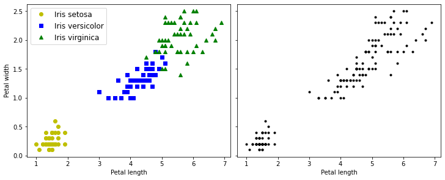
K-Means#
from sklearn.datasets import make_blobs
blob_centers = np.array([[0.2, 2.3], [-1.5, 2.3], [-2.8, 1.8], [-2.8, 2.8],
[-2.8, 1.3]])
blob_std = np.array([0.4, 0.3, 0.1, 0.1, 0.1])
X, y = make_blobs(n_samples=2000,
centers=blob_centers,
cluster_std=blob_std,
random_state=7)
def plot_clusters(ax, X, y=None):
ax.scatter(X[:, 0], X[:, 1], c=y, s=1)
ax.set_xlabel("$x_1$", fontsize='medium')
ax.set_ylabel("$x_2$", fontsize='medium', rotation=0)
_, ax = plt.subplots(figsize=(6, 4))
plot_clusters(ax, X)
plt.show()
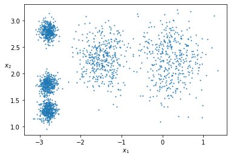
拟合#
from sklearn.cluster import KMeans
k = 5
kmeans = KMeans(n_clusters=k, random_state=42)
y_pred = kmeans.fit_predict(X)
y_pred
array([4, 0, 1, ..., 2, 1, 0], dtype=int32)
y_pred is kmeans.labels_
True
kmeans.cluster_centers_
array([[-2.80389616, 1.80117999],
[ 0.20876306, 2.25551336],
[-2.79290307, 2.79641063],
[-1.46679593, 2.28585348],
[-2.80037642, 1.30082566]])
标签#
kmeans.labels_
array([4, 0, 1, ..., 2, 1, 0], dtype=int32)
X_new = np.array([[0, 2], [3, 2], [-3, 3], [-3, 2.5]])
kmeans.predict(X_new)
array([1, 1, 2, 2], dtype=int32)
决策边界#
def plot_data(ax, X):
ax.plot(X[:, 0], X[:, 1], 'k.', markersize=2)
def plot_centroids(ax,
centroids,
weights=None,
circle_color='w',
cross_color='k'):
if weights is not None:
centroids = centroids[weights > weights.max() / 10]
ax.scatter(centroids[:, 0],
centroids[:, 1],
marker='o',
s=35,
linewidths=8,
color=circle_color,
zorder=10,
alpha=0.9)
ax.scatter(centroids[:, 0],
centroids[:, 1],
marker='x',
s=2,
linewidths=12,
color=cross_color,
zorder=11,
alpha=1)
def plot_decision_boundaries(ax,
clusterer,
X,
resolution=1000,
show_centroids=True,
show_xlabels=True,
show_ylabels=True):
mins = X.min(axis=0) - 0.1
maxs = X.max(axis=0) + 0.1
xx, yy = np.meshgrid(np.linspace(mins[0], maxs[0], resolution),
np.linspace(mins[1], maxs[1], resolution))
Z = clusterer.predict(np.c_[xx.ravel(), yy.ravel()])
Z = Z.reshape(xx.shape)
ax.contourf(Z, extent=(mins[0], maxs[0], mins[1], maxs[1]), cmap="Pastel2")
ax.contour(Z,
extent=(mins[0], maxs[0], mins[1], maxs[1]),
linewidths=1,
colors='k')
plot_data(ax, X)
if show_centroids:
plot_centroids(ax, clusterer.cluster_centers_)
if show_xlabels:
ax.set_xlabel("$x_1$", fontsize='medium')
else:
ax.tick_params(labelbottom=False)
if show_ylabels:
ax.set_ylabel("$x_2$", fontsize='medium', rotation=0)
else:
ax.tick_params(labelleft=False)
_, ax = plt.subplots(figsize=(6, 4))
plot_decision_boundaries(ax, kmeans, X)
plt.show()
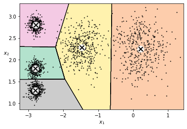
硬聚类、软聚类#
kmeans.transform(X_new)
array([[2.81093633, 0.32995317, 2.9042344 , 1.49439034, 2.88633901],
[5.80730058, 2.80290755, 5.84739223, 4.4759332 , 5.84236351],
[1.21475352, 3.29399768, 0.29040966, 1.69136631, 1.71086031],
[0.72581411, 3.21806371, 0.36159148, 1.54808703, 1.21567622]])
np.linalg.norm(np.tile(X_new,
(1, k)).reshape(-1, k, 2) - kmeans.cluster_centers_,
axis=2)
array([[2.81093633, 0.32995317, 2.9042344 , 1.49439034, 2.88633901],
[5.80730058, 2.80290755, 5.84739223, 4.4759332 , 5.84236351],
[1.21475352, 3.29399768, 0.29040966, 1.69136631, 1.71086031],
[0.72581411, 3.21806371, 0.36159148, 1.54808703, 1.21567622]])
算法过程#
kmeans_iter1 = KMeans(n_clusters=5,
init="random",
n_init=1,
algorithm="lloyd",
max_iter=1,
random_state=0)
kmeans_iter2 = KMeans(n_clusters=5,
init="random",
n_init=1,
algorithm="lloyd",
max_iter=2,
random_state=0)
kmeans_iter3 = KMeans(n_clusters=5,
init="random",
n_init=1,
algorithm="lloyd",
max_iter=3,
random_state=0)
kmeans_iter1.fit(X)
kmeans_iter2.fit(X)
kmeans_iter3.fit(X)
KMeans(init='random', max_iter=3, n_clusters=5, n_init=1, random_state=0)In a Jupyter environment, please rerun this cell to show the HTML representation or trust the notebook.
On GitHub, the HTML representation is unable to render, please try loading this page with nbviewer.org.
KMeans(init='random', max_iter=3, n_clusters=5, n_init=1, random_state=0)
_, axes = plt.subplots(3, 2, figsize=(10, 8), constrained_layout=True)
plot_data(axes[0, 0], X)
plot_centroids(axes[0, 0],
kmeans_iter1.cluster_centers_,
circle_color='r',
cross_color='w')
axes[0, 0].set_ylabel("$x_2$", fontsize='medium', rotation=0)
axes[0, 0].tick_params(labelbottom=False)
axes[0, 0].set_title("Update the centroids (initially randomly)",
fontsize='medium')
plot_decision_boundaries(axes[0, 1],
kmeans_iter1,
X,
show_xlabels=False,
show_ylabels=False)
axes[0, 1].set_title("Label the instances", fontsize='medium')
plot_decision_boundaries(axes[1, 0],
kmeans_iter1,
X,
show_centroids=False,
show_xlabels=False)
plot_centroids(axes[1, 0], kmeans_iter2.cluster_centers_)
plot_decision_boundaries(axes[1, 1],
kmeans_iter2,
X,
show_xlabels=False,
show_ylabels=False)
plot_decision_boundaries(axes[2, 0], kmeans_iter2, X, show_centroids=False)
plot_centroids(axes[2, 0], kmeans_iter3.cluster_centers_)
plot_decision_boundaries(axes[2, 1], kmeans_iter3, X, show_ylabels=False)
plt.show()
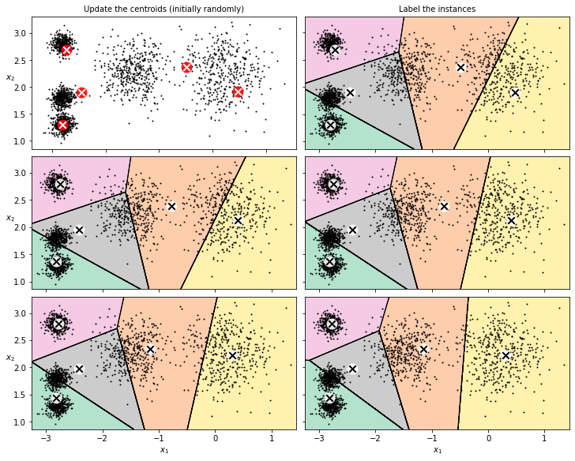
变体#
def plot_clusterer_comparison(clusterer1,
clusterer2,
X,
title1=None,
title2=None):
clusterer1.fit(X)
clusterer2.fit(X)
_, axes = plt.subplots(1, 2, figsize=(10, 4), constrained_layout=True)
plot_decision_boundaries(axes[0], clusterer1, X)
if title1:
axes[0].set_title(title1, fontsize='medium')
plot_decision_boundaries(axes[1], clusterer2, X, show_ylabels=False)
if title2:
axes[1].set_title(title2, fontsize='medium')
kmeans_rnd_init1 = KMeans(n_clusters=5,
init="random",
n_init=1,
algorithm="lloyd",
random_state=2)
kmeans_rnd_init2 = KMeans(n_clusters=5,
init="random",
n_init=1,
algorithm="lloyd",
random_state=5)
plot_clusterer_comparison(kmeans_rnd_init1, kmeans_rnd_init2, X, "Solution 1",
"Solution 2 (with a different random init)")
plt.show()
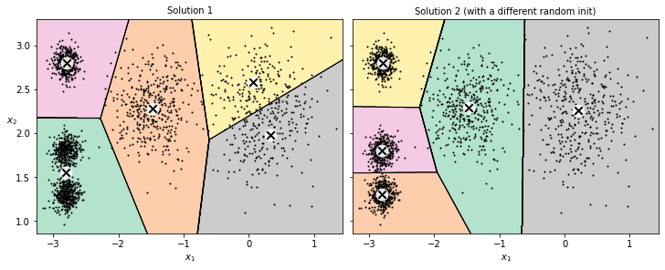
惯量#
kmeans.inertia_
211.59853725816836
X_dist = kmeans.transform(X)
np.sum(X_dist[np.arange(len(X_dist)), kmeans.labels_]**2)
211.59853725816856
kmeans.score(X)
-211.5985372581684
多初始化#
kmeans_rnd_init1.inertia_
219.43539442771402
kmeans_rnd_init2.inertia_
211.5985372581684
kmeans_rnd_10_inits = KMeans(n_clusters=5,
init="random",
n_init=10,
algorithm="lloyd",
random_state=2)
kmeans_rnd_10_inits.fit(X)
KMeans(init='random', n_clusters=5, random_state=2)In a Jupyter environment, please rerun this cell to show the HTML representation or trust the notebook.
On GitHub, the HTML representation is unable to render, please try loading this page with nbviewer.org.
KMeans(init='random', n_clusters=5, random_state=2)
_, ax = plt.subplots(figsize=(6, 4))
plot_decision_boundaries(ax, kmeans_rnd_10_inits, X)
plt.show()
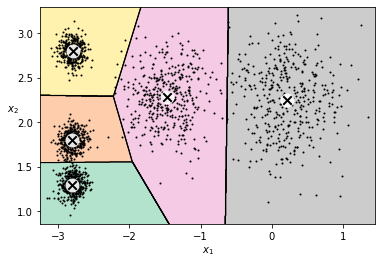
形心初始化#
KMeans()
KMeans()In a Jupyter environment, please rerun this cell to show the HTML representation or trust the notebook.
On GitHub, the HTML representation is unable to render, please try loading this page with nbviewer.org.
KMeans()
good_init = np.array([[-3, 3], [-3, 2], [-3, 1], [-1, 2], [0, 2]])
kmeans = KMeans(n_clusters=5, init=good_init, n_init=1, random_state=42)
kmeans.fit(X)
kmeans.inertia_
211.59853725816836
加速#
%timeit -n 50 KMeans(algorithm="elkan", random_state=42).fit(X)
277 ms ± 30 ms per loop (mean ± std. dev. of 7 runs, 50 loops each)
%timeit -n 50 KMeans(algorithm="lloyd", random_state=42).fit(X)
207 ms ± 35.6 ms per loop (mean ± std. dev. of 7 runs, 50 loops each)
小批量 K-Means#
from sklearn.cluster import MiniBatchKMeans
minibatch_kmeans = MiniBatchKMeans(n_clusters=5, random_state=42)
minibatch_kmeans.fit(X)
MiniBatchKMeans(n_clusters=5, random_state=42)In a Jupyter environment, please rerun this cell to show the HTML representation or trust the notebook.
On GitHub, the HTML representation is unable to render, please try loading this page with nbviewer.org.
MiniBatchKMeans(n_clusters=5, random_state=42)
minibatch_kmeans.inertia_
211.652398504332
import urllib.request
from sklearn.datasets import fetch_openml
mnist = fetch_openml('mnist_784', version=1, as_frame=False)
mnist.target = mnist.target.astype(np.int64)
from sklearn.model_selection import train_test_split
X_train, X_test, y_train, y_test = train_test_split(
mnist["data"], mnist["target"], random_state=42)
保存模型#
filename = "../../datasets/handson/mnist_784.data"
X_mm = np.memmap(filename, dtype='float32', mode='write', shape=X_train.shape)
X_mm[:] = X_train
minibatch_kmeans = MiniBatchKMeans(n_clusters=10,
batch_size=10,
random_state=42)
minibatch_kmeans.fit(X_mm)
MiniBatchKMeans(batch_size=10, n_clusters=10, random_state=42)In a Jupyter environment, please rerun this cell to show the HTML representation or trust the notebook.
On GitHub, the HTML representation is unable to render, please try loading this page with nbviewer.org.
MiniBatchKMeans(batch_size=10, n_clusters=10, random_state=42)
def load_next_batch(batch_size):
return X[np.random.choice(len(X), batch_size, replace=False)]
np.random.seed(42)
k = 5
n_init = 10
n_iterations = 100
batch_size = 100
init_size = 500 # more data for K-Means++ initialization
evaluate_on_last_n_iters = 10
best_kmeans = None
for init in range(n_init):
minibatch_kmeans = MiniBatchKMeans(n_clusters=k, init_size=init_size)
X_init = load_next_batch(init_size)
minibatch_kmeans.partial_fit(X_init)
minibatch_kmeans.sum_inertia_ = 0
for iteration in range(n_iterations):
X_batch = load_next_batch(batch_size)
minibatch_kmeans.partial_fit(X_batch)
if iteration >= n_iterations - evaluate_on_last_n_iters:
minibatch_kmeans.sum_inertia_ += minibatch_kmeans.inertia_
if (best_kmeans is None
or minibatch_kmeans.sum_inertia_ < best_kmeans.sum_inertia_):
best_kmeans = minibatch_kmeans
best_kmeans.score(X)
-211.62571878891143
%timeit KMeans(n_clusters=5, random_state=42).fit(X)
145 ms ± 67.1 ms per loop (mean ± std. dev. of 7 runs, 1 loop each)
%timeit MiniBatchKMeans(n_clusters=5, random_state=42).fit(X)
78.8 ms ± 18.8 ms per loop (mean ± std. dev. of 7 runs, 10 loops each)
from timeit import timeit
n_total = 50
times = np.empty((n_total, 2))
inertias = np.empty((n_total, 2))
for k in range(1, n_total + 1):
kmeans_ = KMeans(n_clusters=k, random_state=42)
minibatch_kmeans = MiniBatchKMeans(n_clusters=k, random_state=42)
print("\r{}/{}".format(k, n_total), end="")
times[k - 1, 0] = timeit("kmeans_.fit(X)", number=10, globals=globals())
times[k - 1, 1] = timeit("minibatch_kmeans.fit(X)",
number=10,
globals=globals())
inertias[k - 1, 0] = kmeans_.inertia_
inertias[k - 1, 1] = minibatch_kmeans.inertia_
50/50
_, axes = plt.subplots(1, 2, figsize=(10, 4), constrained_layout=True)
axes[0].plot(range(1, n_total + 1), inertias[:, 0], "r--", label="K-Means")
axes[0].plot(range(1, n_total + 1),
inertias[:, 1],
"b.-",
label="Mini-batch K-Means")
axes[0].set_xlabel("$k$", fontsize='large')
axes[0].set_title("Inertia", fontsize='medium')
axes[0].legend(fontsize='medium')
axes[0].axis([1, n_total, 0, 100])
axes[1].plot(range(1, n_total + 1), times[:, 0], "r--", label="K-Means")
axes[1].plot(range(1, n_total + 1),
times[:, 1],
"b.-",
label="Mini-batch K-Means")
axes[1].set_xlabel("$k$", fontsize='large')
axes[1].set_title("Training time (seconds)", fontsize='medium')
axes[1].axis([1, n_total, 0, 6])
plt.show()
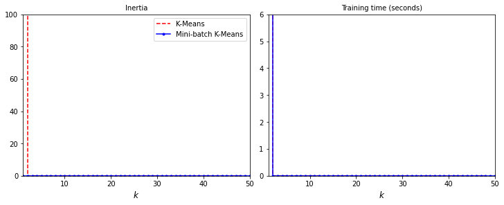
最优聚类数#
kmeans_k3 = KMeans(n_clusters=3, random_state=42)
kmeans_k8 = KMeans(n_clusters=8, random_state=42)
plot_clusterer_comparison(kmeans_k3, kmeans_k8, X, "$k=3$", "$k=8$")
plt.show()
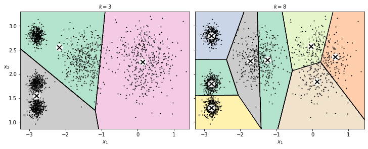
kmeans_k3.inertia_
653.2167190021553
kmeans_k8.inertia_
119.1198341610288
kmeans_per_k = [
KMeans(n_clusters=k, random_state=42).fit(X) for k in range(1, 10)
]
inertias = [model.inertia_ for model in kmeans_per_k]
_, ax = plt.subplots(figsize=(6, 4))
ax.plot(range(1, 10), inertias, "bo-")
ax.set_xlabel("$k$", fontsize='medium')
ax.set_ylabel("Inertia", fontsize='medium')
ax.annotate('Elbow',
xy=(4, inertias[3]),
xytext=(0.55, 0.55),
textcoords='figure fraction',
fontsize='large',
arrowprops=dict(facecolor='black', shrink=0.1))
ax.axis([1, 8.5, 0, 1300])
plt.show()
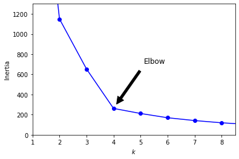
_, ax = plt.subplots(figsize=(6, 4))
plot_decision_boundaries(ax, kmeans_per_k[4 - 1], X)
plt.show()
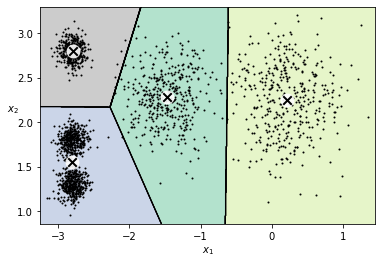
轮廓值#
from sklearn.metrics import silhouette_score
silhouette_score(X, kmeans.labels_)
0.655517642572828
silhouette_scores = [
silhouette_score(X, model.labels_) for model in kmeans_per_k[1:]
]
_, ax = plt.subplots(figsize=(6, 4))
ax.plot(range(2, 10), silhouette_scores, "bo-")
ax.set_xlabel("$k$", fontsize='medium')
ax.set_ylabel("Silhouette score", fontsize='medium')
ax.axis([1.8, 8.5, 0.55, 0.7])
plt.show()
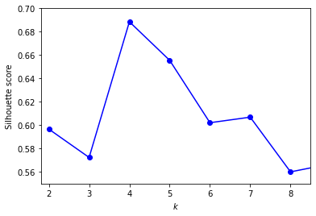
from sklearn.metrics import silhouette_samples
from matplotlib.ticker import FixedLocator, FixedFormatter
import matplotlib as mpl
plt.figure(figsize=(11, 9))
for k in (3, 4, 5, 6):
plt.subplot(2, 2, k - 2)
y_pred = kmeans_per_k[k - 1].labels_
silhouette_coefficients = silhouette_samples(X, y_pred)
padding = len(X) // 30
pos = padding
ticks = []
for i in range(k):
coeffs = silhouette_coefficients[y_pred == i]
coeffs.sort()
color = mpl.cm.Spectral(i / k)
plt.fill_betweenx(np.arange(pos, pos + len(coeffs)),
0,
coeffs,
facecolor=color,
edgecolor=color,
alpha=0.7)
ticks.append(pos + len(coeffs) // 2)
pos += len(coeffs) + padding
plt.gca().yaxis.set_major_locator(FixedLocator(ticks))
plt.gca().yaxis.set_major_formatter(FixedFormatter(range(k)))
if k in (3, 5):
plt.ylabel("Cluster")
if k in (5, 6):
plt.gca().set_xticks([-0.1, 0, 0.2, 0.4, 0.6, 0.8, 1])
plt.xlabel("Silhouette Coefficient")
else:
plt.tick_params(labelbottom=False)
plt.axvline(x=silhouette_scores[k - 2], color="red", linestyle="--")
plt.title(f"$k={k}$", fontsize='large')
plt.show()
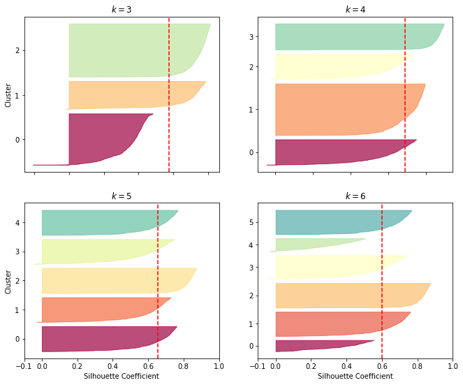
K-Means 限制#
X1, y1 = make_blobs(n_samples=1000, centers=((4, -4), (0, 0)), random_state=42)
X1 = X1.dot(np.array([[0.374, 0.95], [0.732, 0.598]]))
X2, y2 = make_blobs(n_samples=250, centers=1, random_state=42)
X2 = X2 + [6, -8]
X = np.r_[X1, X2]
y = np.r_[y1, y2]
_, ax = plt.subplots(figsize=(6, 4))
plot_clusters(ax, X)
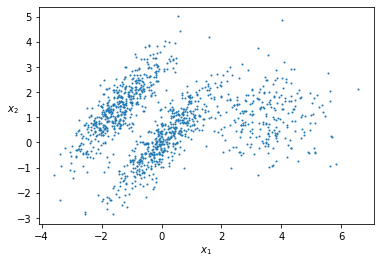
kmeans_good = KMeans(n_clusters=3,
init=np.array([[-1.5, 2.5], [0.5, 0], [4, 0]]),
n_init=1,
random_state=42)
kmeans_bad = KMeans(n_clusters=3, random_state=42)
kmeans_good.fit(X)
kmeans_bad.fit(X)
KMeans(n_clusters=3, random_state=42)In a Jupyter environment, please rerun this cell to show the HTML representation or trust the notebook.
On GitHub, the HTML representation is unable to render, please try loading this page with nbviewer.org.
KMeans(n_clusters=3, random_state=42)
_, axes = plt.subplots(1, 2, figsize=(10, 4), constrained_layout=True)
plot_decision_boundaries(axes[0], kmeans_good, X)
axes[0].set_title(f"Inertia = {kmeans_good.inertia_:.1f}", fontsize='medium')
plot_decision_boundaries(axes[1], kmeans_bad, X, show_ylabels=False)
axes[1].set_title(f"Inertia = {kmeans_bad.inertia_:.1f}", fontsize='medium')
plt.show()
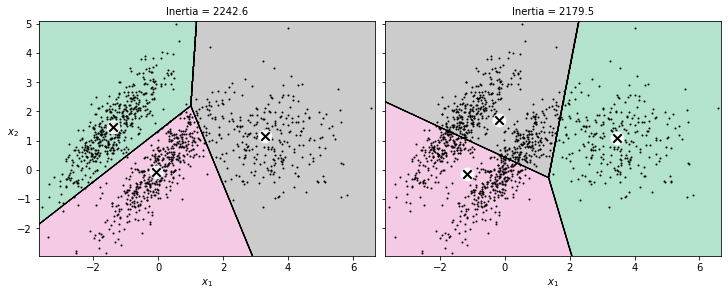
图像分割#
from matplotlib.image import imread
images_path = '../../datasets/handson/ladybug.png'
image = imread(images_path)
image.shape
(533, 800, 3)
X = image.reshape(-1, 3)
kmeans = KMeans(n_clusters=8, random_state=42).fit(X)
segmented_img = kmeans.cluster_centers_[kmeans.labels_]
segmented_img = segmented_img.reshape(image.shape)
segmented_imgs = []
n_colors = (10, 8, 6, 4, 2)
for n_clusters in n_colors:
kmeans = KMeans(n_clusters=n_clusters, random_state=42).fit(X)
segmented_img = kmeans.cluster_centers_[kmeans.labels_]
segmented_imgs.append(segmented_img.reshape(image.shape))
_, axes = plt.subplots(2, 3, figsize=(12, 10), constrained_layout=True)
axes[0, 0].imshow(image)
axes[0, 0].set_title("Original image")
axes[0, 0].axis('off')
for idx, ax in enumerate(axes.flatten()[1:]):
ax.imshow(segmented_imgs[idx])
ax.set_title(f"{n_clusters} colors")
ax.axis('off')
plt.show()
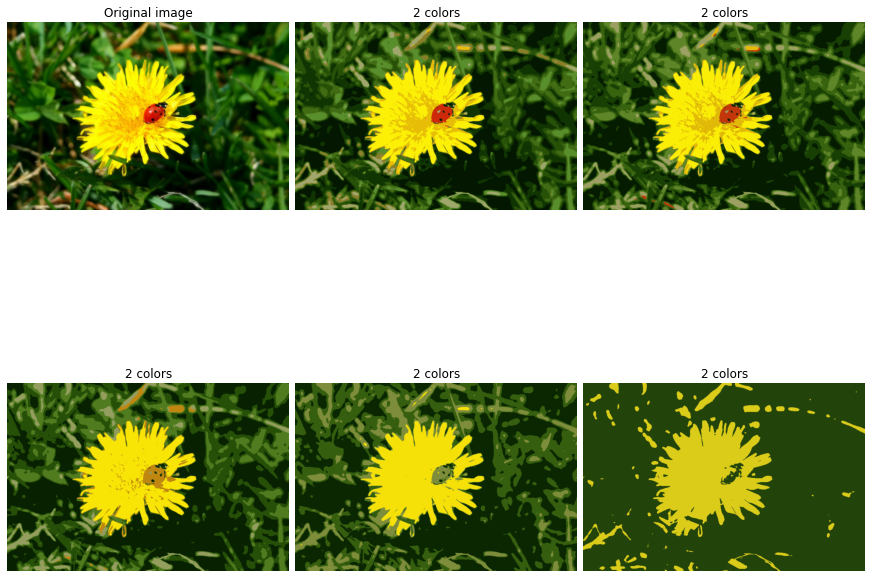
预处理#
from sklearn.datasets import load_digits
X_digits, y_digits = load_digits(return_X_y=True)
from sklearn.model_selection import train_test_split
X_train, X_test, y_train, y_test = train_test_split(X_digits,
y_digits,
random_state=42)
from sklearn.linear_model import LogisticRegression
log_reg = LogisticRegression(multi_class="ovr",
solver="lbfgs",
max_iter=5000,
random_state=42)
log_reg.fit(X_train, y_train)
LogisticRegression(max_iter=5000, multi_class='ovr', random_state=42)In a Jupyter environment, please rerun this cell to show the HTML representation or trust the notebook.
On GitHub, the HTML representation is unable to render, please try loading this page with nbviewer.org.
LogisticRegression(max_iter=5000, multi_class='ovr', random_state=42)
log_reg_score = log_reg.score(X_test, y_test)
log_reg_score
0.9688888888888889
管线#
from sklearn.pipeline import Pipeline
pipeline = Pipeline([
("kmeans", KMeans(n_clusters=50, random_state=42)),
("log_reg",
LogisticRegression(multi_class="ovr",
solver="lbfgs",
max_iter=5000,
random_state=42)),
])
pipeline.fit(X_train, y_train)
Pipeline(steps=[('kmeans', KMeans(n_clusters=50, random_state=42)),
('log_reg',
LogisticRegression(max_iter=5000, multi_class='ovr',
random_state=42))])In a Jupyter environment, please rerun this cell to show the HTML representation or trust the notebook. On GitHub, the HTML representation is unable to render, please try loading this page with nbviewer.org.
Pipeline(steps=[('kmeans', KMeans(n_clusters=50, random_state=42)),
('log_reg',
LogisticRegression(max_iter=5000, multi_class='ovr',
random_state=42))])KMeans(n_clusters=50, random_state=42)
LogisticRegression(max_iter=5000, multi_class='ovr', random_state=42)
pipeline_score = pipeline.score(X_test, y_test)
pipeline_score
0.9777777777777777
1 - (1 - pipeline_score) / (1 - log_reg_score)
0.28571428571428414
调参#
from sklearn.model_selection import GridSearchCV
param_grid = dict(kmeans__n_clusters=range(2, 20))
grid_clf = GridSearchCV(pipeline, param_grid, cv=3, verbose=2)
grid_clf.fit(X_train, y_train)
Fitting 3 folds for each of 18 candidates, totalling 54 fits
[CV] END ...............................kmeans__n_clusters=2; total time= 0.3s
[CV] END ...............................kmeans__n_clusters=2; total time= 0.1s
[CV] END ...............................kmeans__n_clusters=2; total time= 0.2s
[CV] END ...............................kmeans__n_clusters=3; total time= 0.1s
[CV] END ...............................kmeans__n_clusters=3; total time= 0.2s
[CV] END ...............................kmeans__n_clusters=3; total time= 0.2s
[CV] END ...............................kmeans__n_clusters=4; total time= 0.2s
[CV] END ...............................kmeans__n_clusters=4; total time= 0.1s
[CV] END ...............................kmeans__n_clusters=4; total time= 0.2s
[CV] END ...............................kmeans__n_clusters=5; total time= 0.2s
[CV] END ...............................kmeans__n_clusters=5; total time= 0.2s
[CV] END ...............................kmeans__n_clusters=5; total time= 0.2s
[CV] END ...............................kmeans__n_clusters=6; total time= 0.2s
[CV] END ...............................kmeans__n_clusters=6; total time= 0.2s
[CV] END ...............................kmeans__n_clusters=6; total time= 0.2s
[CV] END ...............................kmeans__n_clusters=7; total time= 0.3s
[CV] END ...............................kmeans__n_clusters=7; total time= 0.4s
[CV] END ...............................kmeans__n_clusters=7; total time= 0.4s
[CV] END ...............................kmeans__n_clusters=8; total time= 0.5s
[CV] END ...............................kmeans__n_clusters=8; total time= 0.4s
[CV] END ...............................kmeans__n_clusters=8; total time= 0.2s
[CV] END ...............................kmeans__n_clusters=9; total time= 0.3s
[CV] END ...............................kmeans__n_clusters=9; total time= 0.3s
[CV] END ...............................kmeans__n_clusters=9; total time= 0.2s
[CV] END ..............................kmeans__n_clusters=10; total time= 0.3s
[CV] END ..............................kmeans__n_clusters=10; total time= 0.3s
[CV] END ..............................kmeans__n_clusters=10; total time= 0.3s
[CV] END ..............................kmeans__n_clusters=11; total time= 3.4s
[CV] END ..............................kmeans__n_clusters=11; total time= 4.6s
[CV] END ..............................kmeans__n_clusters=11; total time= 5.4s
[CV] END ..............................kmeans__n_clusters=12; total time= 5.1s
[CV] END ..............................kmeans__n_clusters=12; total time= 4.6s
[CV] END ..............................kmeans__n_clusters=12; total time= 3.2s
[CV] END ..............................kmeans__n_clusters=13; total time= 7.6s
[CV] END ..............................kmeans__n_clusters=13; total time= 19.9s
[CV] END ..............................kmeans__n_clusters=13; total time= 14.9s
[CV] END ..............................kmeans__n_clusters=14; total time= 6.6s
[CV] END ..............................kmeans__n_clusters=14; total time= 9.6s
[CV] END ..............................kmeans__n_clusters=14; total time= 7.2s
[CV] END ..............................kmeans__n_clusters=15; total time= 8.1s
[CV] END ..............................kmeans__n_clusters=15; total time= 7.5s
[CV] END ..............................kmeans__n_clusters=15; total time= 5.3s
[CV] END ..............................kmeans__n_clusters=16; total time= 4.8s
[CV] END ..............................kmeans__n_clusters=16; total time= 8.2s
[CV] END ..............................kmeans__n_clusters=16; total time= 8.7s
[CV] END ..............................kmeans__n_clusters=17; total time= 8.5s
[CV] END ..............................kmeans__n_clusters=17; total time= 8.4s
[CV] END ..............................kmeans__n_clusters=17; total time= 9.8s
[CV] END ..............................kmeans__n_clusters=18; total time= 12.7s
[CV] END ..............................kmeans__n_clusters=18; total time= 10.3s
[CV] END ..............................kmeans__n_clusters=18; total time= 11.7s
[CV] END ..............................kmeans__n_clusters=19; total time= 11.3s
[CV] END ..............................kmeans__n_clusters=19; total time= 11.5s
[CV] END ..............................kmeans__n_clusters=19; total time= 9.6s
GridSearchCV(cv=3,
estimator=Pipeline(steps=[('kmeans',
KMeans(n_clusters=50, random_state=42)),
('log_reg',
LogisticRegression(max_iter=5000,
multi_class='ovr',
random_state=42))]),
param_grid={'kmeans__n_clusters': range(2, 20)}, verbose=2)In a Jupyter environment, please rerun this cell to show the HTML representation or trust the notebook. On GitHub, the HTML representation is unable to render, please try loading this page with nbviewer.org.
GridSearchCV(cv=3,
estimator=Pipeline(steps=[('kmeans',
KMeans(n_clusters=50, random_state=42)),
('log_reg',
LogisticRegression(max_iter=5000,
multi_class='ovr',
random_state=42))]),
param_grid={'kmeans__n_clusters': range(2, 20)}, verbose=2)Pipeline(steps=[('kmeans', KMeans(n_clusters=50, random_state=42)),
('log_reg',
LogisticRegression(max_iter=5000, multi_class='ovr',
random_state=42))])KMeans(n_clusters=50, random_state=42)
LogisticRegression(max_iter=5000, multi_class='ovr', random_state=42)
grid_clf.best_params_
{'kmeans__n_clusters': 18}
grid_clf.score(X_test, y_test)
0.96
半监督学习#
n_labeled = 50
log_reg = LogisticRegression(multi_class="ovr",
solver="lbfgs",
random_state=42)
log_reg.fit(X_train[:n_labeled], y_train[:n_labeled])
log_reg.score(X_test, y_test)
0.8333333333333334
k = 50
表示#
kmeans = KMeans(n_clusters=k, random_state=42)
X_digits_dist = kmeans.fit_transform(X_train)
representative_digit_idx = np.argmin(X_digits_dist, axis=0)
X_representative_digits = X_train[representative_digit_idx]
_, axes = plt.subplots(5, 10, figsize=(10, 4), constrained_layout=True)
for X_representative_digit, ax in zip(X_representative_digits, axes.flatten()):
ax.imshow(X_representative_digit.reshape(8, 8),
cmap="binary",
interpolation="bilinear")
ax.axis('off')
plt.show()
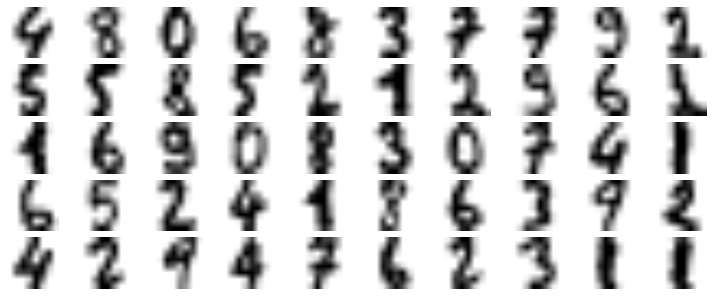
y_train[representative_digit_idx]
array([4, 8, 0, 6, 8, 3, 7, 7, 9, 2, 5, 5, 8, 5, 2, 1, 2, 9, 6, 1, 1, 6,
9, 0, 8, 3, 0, 7, 4, 1, 6, 5, 2, 4, 1, 8, 6, 3, 9, 2, 4, 2, 9, 4,
7, 6, 2, 3, 1, 1])
y_representative_digits = np.array([
0, 1, 3, 2, 7, 6, 4, 6, 9, 5, 1, 2, 9, 5, 2, 7, 8, 1, 8, 6, 3, 2, 5, 4, 5,
4, 0, 3, 2, 6, 1, 7, 7, 9, 1, 8, 6, 5, 4, 8, 5, 3, 3, 6, 7, 9, 7, 8, 4, 9
])
log_reg = LogisticRegression(multi_class="ovr",
solver="lbfgs",
max_iter=5000,
random_state=42)
log_reg.fit(X_representative_digits, y_representative_digits)
log_reg.score(X_test, y_test)
0.10444444444444445
y_train_propagated = np.empty(len(X_train), dtype=np.int32)
for i in range(k):
y_train_propagated[kmeans.labels_ == i] = y_representative_digits[i]
log_reg = LogisticRegression(multi_class="ovr",
solver="lbfgs",
max_iter=5000,
random_state=42)
log_reg.fit(X_train, y_train_propagated)
LogisticRegression(max_iter=5000, multi_class='ovr', random_state=42)In a Jupyter environment, please rerun this cell to show the HTML representation or trust the notebook.
On GitHub, the HTML representation is unable to render, please try loading this page with nbviewer.org.
LogisticRegression(max_iter=5000, multi_class='ovr', random_state=42)
log_reg.score(X_test, y_test)
0.14888888888888888
距离#
percentile_closest = 75
X_cluster_dist = X_digits_dist[np.arange(len(X_train)), kmeans.labels_]
for i in range(k):
in_cluster = (kmeans.labels_ == i)
cluster_dist = X_cluster_dist[in_cluster]
cutoff_distance = np.percentile(cluster_dist, percentile_closest)
above_cutoff = (X_cluster_dist > cutoff_distance)
X_cluster_dist[in_cluster & above_cutoff] = -1
partially_propagated = (X_cluster_dist != -1)
X_train_partially_propagated = X_train[partially_propagated]
y_train_partially_propagated = y_train_propagated[partially_propagated]
log_reg = LogisticRegression(multi_class="ovr",
solver="lbfgs",
max_iter=5000,
random_state=42)
log_reg.fit(X_train_partially_propagated, y_train_partially_propagated)
LogisticRegression(max_iter=5000, multi_class='ovr', random_state=42)In a Jupyter environment, please rerun this cell to show the HTML representation or trust the notebook.
On GitHub, the HTML representation is unable to render, please try loading this page with nbviewer.org.
LogisticRegression(max_iter=5000, multi_class='ovr', random_state=42)
log_reg.score(X_test, y_test)
0.15777777777777777
np.mean(y_train_partially_propagated == y_train[partially_propagated])
0.19541375872382852
DBSCAN#
from sklearn.datasets import make_moons
X, y = make_moons(n_samples=1000, noise=0.05, random_state=42)
from sklearn.cluster import DBSCAN
dbscan = DBSCAN(eps=0.05, min_samples=5)
dbscan.fit(X)
DBSCAN(eps=0.05)In a Jupyter environment, please rerun this cell to show the HTML representation or trust the notebook.
On GitHub, the HTML representation is unable to render, please try loading this page with nbviewer.org.
DBSCAN(eps=0.05)
dbscan.labels_[:10]
array([ 0, 2, -1, -1, 1, 0, 0, 0, 2, 5])
len(dbscan.core_sample_indices_)
808
dbscan.core_sample_indices_[:10]
array([ 0, 4, 5, 6, 7, 8, 10, 11, 12, 13])
dbscan.components_[:3]
array([[-0.02137124, 0.40618608],
[-0.84192557, 0.53058695],
[ 0.58930337, -0.32137599]])
np.unique(dbscan.labels_)
array([-1, 0, 1, 2, 3, 4, 5, 6])
dbscan2 = DBSCAN(eps=0.2)
dbscan2.fit(X)
DBSCAN(eps=0.2)In a Jupyter environment, please rerun this cell to show the HTML representation or trust the notebook.
On GitHub, the HTML representation is unable to render, please try loading this page with nbviewer.org.
DBSCAN(eps=0.2)
def plot_dbscan(ax, dbscan, X, size, show_xlabels=True, show_ylabels=True):
core_mask = np.zeros_like(dbscan.labels_, dtype=bool)
core_mask[dbscan.core_sample_indices_] = True
anomalies_mask = dbscan.labels_ == -1
non_core_mask = ~(core_mask | anomalies_mask)
cores = dbscan.components_
anomalies = X[anomalies_mask]
non_cores = X[non_core_mask]
ax.scatter(cores[:, 0],
cores[:, 1],
c=dbscan.labels_[core_mask],
marker='o',
s=size,
cmap="Paired")
ax.scatter(cores[:, 0],
cores[:, 1],
marker='*',
s=20,
c=dbscan.labels_[core_mask])
ax.scatter(anomalies[:, 0], anomalies[:, 1], c="r", marker="x", s=100)
ax.scatter(non_cores[:, 0],
non_cores[:, 1],
c=dbscan.labels_[non_core_mask],
marker=".")
if show_xlabels:
ax.set_xlabel("$x_1$", fontsize='medium')
else:
ax.tick_params(labelbottom=False)
if show_ylabels:
ax.set_ylabel("$x_2$", fontsize='medium', rotation=0)
else:
ax.tick_params(labelleft=False)
ax.set_title(f"eps={dbscan.eps:.2f}, min_samples={dbscan.min_samples}",
fontsize='medium')
_, axes = plt.subplots(1, 2, figsize=(10, 4), constrained_layout=True)
plot_dbscan(axes[0], dbscan, X, size=100)
plot_dbscan(axes[1], dbscan2, X, size=600, show_ylabels=False)
plt.show()
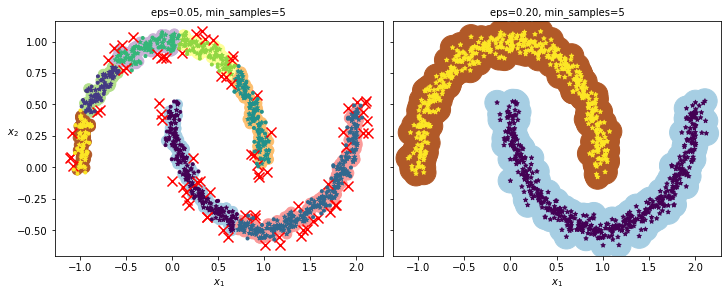
dbscan = dbscan2
from sklearn.neighbors import KNeighborsClassifier
knn = KNeighborsClassifier(n_neighbors=50)
knn.fit(dbscan.components_, dbscan.labels_[dbscan.core_sample_indices_])
KNeighborsClassifier(n_neighbors=50)In a Jupyter environment, please rerun this cell to show the HTML representation or trust the notebook.
On GitHub, the HTML representation is unable to render, please try loading this page with nbviewer.org.
KNeighborsClassifier(n_neighbors=50)
X_new = np.array([[-0.5, 0], [0, 0.5], [1, -0.1], [2, 1]])
knn.predict(X_new)
array([1, 0, 1, 0])
knn.predict_proba(X_new)
array([[0.18, 0.82],
[1. , 0. ],
[0.12, 0.88],
[1. , 0. ]])
_, ax = plt.subplots(figsize=(6, 4))
plot_decision_boundaries(ax, knn, X, show_centroids=False)
ax.scatter(X_new[:, 0], X_new[:, 1], c="b", marker="+", s=200, zorder=10)
plt.show()
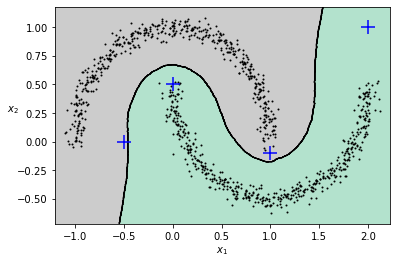
y_dist, y_pred_idx = knn.kneighbors(X_new, n_neighbors=1)
y_pred = dbscan.labels_[dbscan.core_sample_indices_][y_pred_idx]
y_pred[y_dist > 0.2] = -1
y_pred.ravel()
array([-1, 0, 1, -1])
其他聚类#
谱聚类#
from sklearn.cluster import SpectralClustering
sc1 = SpectralClustering(n_clusters=2, gamma=100, random_state=42)
sc1.fit(X)
SpectralClustering(gamma=100, n_clusters=2, random_state=42)In a Jupyter environment, please rerun this cell to show the HTML representation or trust the notebook.
On GitHub, the HTML representation is unable to render, please try loading this page with nbviewer.org.
SpectralClustering(gamma=100, n_clusters=2, random_state=42)
sc2 = SpectralClustering(n_clusters=2, gamma=1, random_state=42)
sc2.fit(X)
SpectralClustering(gamma=1, n_clusters=2, random_state=42)In a Jupyter environment, please rerun this cell to show the HTML representation or trust the notebook.
On GitHub, the HTML representation is unable to render, please try loading this page with nbviewer.org.
SpectralClustering(gamma=1, n_clusters=2, random_state=42)
np.percentile(sc1.affinity_matrix_, 95)
0.04251990648936265
def plot_spectral_clustering(ax,
sc,
X,
size,
alpha,
show_xlabels=True,
show_ylabels=True):
ax.scatter(X[:, 0],
X[:, 1],
marker='o',
s=size,
c='gray',
cmap="Paired",
alpha=alpha)
ax.scatter(X[:, 0], X[:, 1], marker='o', s=30, c='w')
ax.scatter(X[:, 0], X[:, 1], marker='.', s=10, c=sc.labels_, cmap="Paired")
if show_xlabels:
ax.set_xlabel("$x_1$", fontsize='medium')
else:
ax.tick_params(labelbottom=False)
if show_ylabels:
ax.set_ylabel("$x_2$", fontsize='medium', rotation=0)
else:
ax.tick_params(labelleft=False)
ax.set_title("RBF gamma={}".format(sc.gamma), fontsize='medium')
_, axes = plt.subplots(1, 2, figsize=(10, 4), constrained_layout=True)
plot_spectral_clustering(axes[0], sc1, X, size=500, alpha=0.1)
plot_spectral_clustering(axes[1],
sc2,
X,
size=4000,
alpha=0.01,
show_ylabels=False)
plt.show()
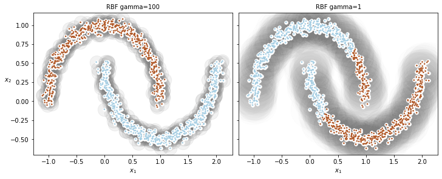
凝聚聚类#
from sklearn.cluster import AgglomerativeClustering
X = np.array([0, 2, 5, 8.5]).reshape(-1, 1)
agg = AgglomerativeClustering(linkage="complete").fit(X)
def learned_parameters(estimator):
return [
attrib for attrib in dir(estimator)
if attrib.endswith("_") and not attrib.startswith("_")
]
learned_parameters(agg)
['children_',
'labels_',
'n_clusters_',
'n_connected_components_',
'n_features_in_',
'n_leaves_']
agg.children_
array([[0, 1],
[2, 3],
[4, 5]])
高斯混合#
X1, y1 = make_blobs(n_samples=1000, centers=((4, -4), (0, 0)), random_state=42)
X1 = X1.dot(np.array([[0.374, 0.95], [0.732, 0.598]]))
X2, y2 = make_blobs(n_samples=250, centers=1, random_state=42)
X2 = X2 + [6, -8]
X = np.r_[X1, X2]
y = np.r_[y1, y2]
from sklearn.mixture import GaussianMixture
gm = GaussianMixture(n_components=3, n_init=10, random_state=42)
gm.fit(X)
GaussianMixture(n_components=3, n_init=10, random_state=42)In a Jupyter environment, please rerun this cell to show the HTML representation or trust the notebook.
On GitHub, the HTML representation is unable to render, please try loading this page with nbviewer.org.
GaussianMixture(n_components=3, n_init=10, random_state=42)
最大期望#
gm.weights_
array([0.39025715, 0.40007391, 0.20966893])
gm.means_
array([[ 0.05131611, 0.07521837],
[-1.40763156, 1.42708225],
[ 3.39893794, 1.05928897]])
gm.covariances_
array([[[ 0.68799922, 0.79606357],
[ 0.79606357, 1.21236106]],
[[ 0.63479409, 0.72970799],
[ 0.72970799, 1.1610351 ]],
[[ 1.14833585, -0.03256179],
[-0.03256179, 0.95490931]]])
gm.converged_
True
gm.n_iter_
4
预测#
gm.predict(X)
array([0, 0, 1, ..., 2, 2, 2])
gm.predict_proba(X)
array([[9.76741808e-01, 6.78581203e-07, 2.32575136e-02],
[9.82832955e-01, 6.76173663e-04, 1.64908714e-02],
[7.46494398e-05, 9.99923327e-01, 2.02398402e-06],
...,
[4.26050456e-07, 2.15512941e-26, 9.99999574e-01],
[5.04987704e-16, 1.48083217e-41, 1.00000000e+00],
[2.24602826e-15, 8.11457779e-41, 1.00000000e+00]])
采样#
X_new, y_new = gm.sample(6)
X_new
array([[-0.86944074, -0.32767626],
[ 0.29836051, 0.28297011],
[-2.8014927 , -0.09047309],
[ 3.98203732, 1.49951491],
[ 3.81677148, 0.53095244],
[ 2.84104923, -0.73858639]])
y_new
array([0, 0, 1, 2, 2, 2])
概率密度#
gm.score_samples(X)
array([-2.60768954, -3.57110232, -3.32987086, ..., -3.51347241,
-4.39798588, -3.80746532])
resolution = 100
grid = np.arange(-10, 10, 1 / resolution)
xx, yy = np.meshgrid(grid, grid)
X_full = np.vstack([xx.ravel(), yy.ravel()]).T
pdf = np.exp(gm.score_samples(X_full))
pdf_probas = pdf * (1 / resolution)**2
pdf_probas.sum()
0.9999999999215022
from matplotlib.colors import LogNorm
def plot_gaussian_mixture(ax,
clusterer,
X,
resolution=1000,
show_ylabels=True):
mins = X.min(axis=0) - 0.1
maxs = X.max(axis=0) + 0.1
xx, yy = np.meshgrid(np.linspace(mins[0], maxs[0], resolution),
np.linspace(mins[1], maxs[1], resolution))
Z = -clusterer.score_samples(np.c_[xx.ravel(), yy.ravel()])
Z = Z.reshape(xx.shape)
ax.contourf(xx,
yy,
Z,
norm=LogNorm(vmin=1.0, vmax=30.0),
levels=np.logspace(0, 2, 12))
ax.contour(xx,
yy,
Z,
norm=LogNorm(vmin=1.0, vmax=30.0),
levels=np.logspace(0, 2, 12),
linewidths=1,
colors='k')
Z = clusterer.predict(np.c_[xx.ravel(), yy.ravel()])
Z = Z.reshape(xx.shape)
ax.contour(xx, yy, Z, linewidths=2, colors='r', linestyles='dashed')
ax.plot(X[:, 0], X[:, 1], 'k.', markersize=2)
plot_centroids(ax, clusterer.means_, clusterer.weights_)
ax.set_xlabel("$x_1$", fontsize='medium')
if show_ylabels:
ax.set_ylabel("$x_2$", fontsize='medium', rotation=0)
else:
ax.tick_params(labelleft=False)
_, ax = plt.subplots(figsize=(6, 4))
plot_gaussian_mixture(ax, gm, X)
plt.show()
gm_full = GaussianMixture(n_components=3,
n_init=10,
covariance_type="full",
random_state=42)
gm_tied = GaussianMixture(n_components=3,
n_init=10,
covariance_type="tied",
random_state=42)
gm_spherical = GaussianMixture(n_components=3,
n_init=10,
covariance_type="spherical",
random_state=42)
gm_diag = GaussianMixture(n_components=3,
n_init=10,
covariance_type="diag",
random_state=42)
gm_full.fit(X)
gm_tied.fit(X)
gm_spherical.fit(X)
gm_diag.fit(X)
GaussianMixture(covariance_type='diag', n_components=3, n_init=10,
random_state=42)In a Jupyter environment, please rerun this cell to show the HTML representation or trust the notebook. On GitHub, the HTML representation is unable to render, please try loading this page with nbviewer.org.
GaussianMixture(covariance_type='diag', n_components=3, n_init=10,
random_state=42)def compare_gaussian_mixtures(gm1, gm2, X):
_, axes = plt.subplots(1, 2, figsize=(10, 4), constrained_layout=True)
plot_gaussian_mixture(axes[0], gm1, X)
axes[0].set_title('covariance_type="{}"'.format(gm1.covariance_type),
fontsize='medium')
plot_gaussian_mixture(axes[1], gm2, X, show_ylabels=False)
axes[1].set_title('covariance_type="{}"'.format(gm2.covariance_type),
fontsize='medium')
compare_gaussian_mixtures(gm_tied, gm_spherical, X)
plt.show()
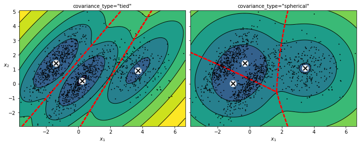
compare_gaussian_mixtures(gm_full, gm_diag, X)
plt.show()
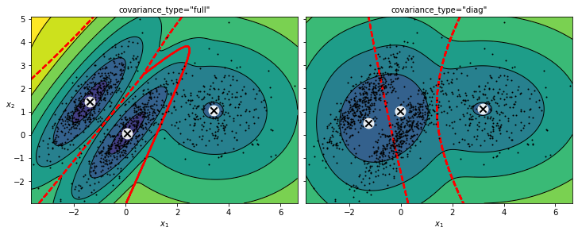
异常值检测#
densities = gm.score_samples(X)
density_threshold = np.percentile(densities, 4)
anomalies = X[densities < density_threshold]
_, ax = plt.subplots(figsize=(6, 4))
plot_gaussian_mixture(ax, gm, X)
ax.scatter(anomalies[:, 0], anomalies[:, 1], color='r', marker='*')
ax.set_ylim(top=5.1)
plt.show()
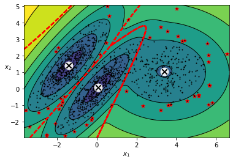
选择聚类数#
gm.bic(X)
8189.747000497186
gm.aic(X)
8102.521720382148
gms_per_k = [
GaussianMixture(n_components=k, n_init=10, random_state=42).fit(X)
for k in range(1, 11)
]
bics = [model.bic(X) for model in gms_per_k]
aics = [model.aic(X) for model in gms_per_k]
_, ax = plt.subplots(figsize=(6, 4))
ax.plot(range(1, 11), bics, "bo-", label="BIC")
ax.plot(range(1, 11), aics, "go--", label="AIC")
ax.set_xlabel("$k$", fontsize='medium')
ax.set_ylabel("Information Criterion", fontsize='medium')
ax.axis([1, 9.5, np.min(aics) - 50, np.max(aics) + 50])
ax.annotate('Minimum',
xy=(3, bics[2]),
xytext=(0.35, 0.6),
textcoords='figure fraction',
fontsize='medium',
arrowprops=dict(facecolor='black', shrink=0.1))
ax.legend()
plt.show()
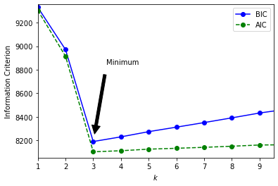
协方差#
min_bic = np.infty
for k in range(1, 11):
for covariance_type in ("full", "tied", "spherical", "diag"):
bic = GaussianMixture(n_components=k,
n_init=10,
covariance_type=covariance_type,
random_state=42).fit(X).bic(X)
if bic < min_bic:
min_bic = bic
best_k = k
best_covariance_type = covariance_type
best_k
3
best_covariance_type
'full'
贝叶斯高斯混合#
from sklearn.mixture import BayesianGaussianMixture
bgm = BayesianGaussianMixture(n_components=10, n_init=10, random_state=42)
bgm.fit(X)
BayesianGaussianMixture(n_components=10, n_init=10, random_state=42)In a Jupyter environment, please rerun this cell to show the HTML representation or trust the notebook.
On GitHub, the HTML representation is unable to render, please try loading this page with nbviewer.org.
BayesianGaussianMixture(n_components=10, n_init=10, random_state=42)
np.round(bgm.weights_, 2)
array([0.4 , 0.21, 0.4 , 0. , 0. , 0. , 0. , 0. , 0. , 0. ])
_, ax = plt.subplots(figsize=(6, 4))
plot_gaussian_mixture(ax, bgm, X)
plt.show()
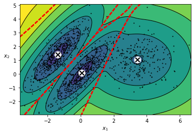
bgm_low = BayesianGaussianMixture(n_components=10,
max_iter=1000,
n_init=1,
weight_concentration_prior=0.01,
random_state=42)
bgm_high = BayesianGaussianMixture(n_components=10,
max_iter=1000,
n_init=1,
weight_concentration_prior=10000,
random_state=42)
nn = 73
bgm_low.fit(X[:nn])
bgm_high.fit(X[:nn])
BayesianGaussianMixture(max_iter=1000, n_components=10, random_state=42,
weight_concentration_prior=10000)In a Jupyter environment, please rerun this cell to show the HTML representation or trust the notebook. On GitHub, the HTML representation is unable to render, please try loading this page with nbviewer.org.
BayesianGaussianMixture(max_iter=1000, n_components=10, random_state=42,
weight_concentration_prior=10000)np.round(bgm_low.weights_, 2)
array([0.52, 0.48, 0. , 0. , 0. , 0. , 0. , 0. , 0. , 0. ])
np.round(bgm_high.weights_, 2)
array([0.01, 0.18, 0.27, 0.11, 0.01, 0.01, 0.01, 0.01, 0.37, 0.01])
_, axes = plt.subplots(1, 2, figsize=(10, 4), constrained_layout=True)
plot_gaussian_mixture(axes[0], bgm_low, X[:nn])
axes[0].set_title("weight_concentration_prior = 0.01", fontsize='medium')
plot_gaussian_mixture(axes[1], bgm_high, X[:nn], show_ylabels=False)
axes[1].set_title("weight_concentration_prior = 10000", fontsize='medium')
plt.show()
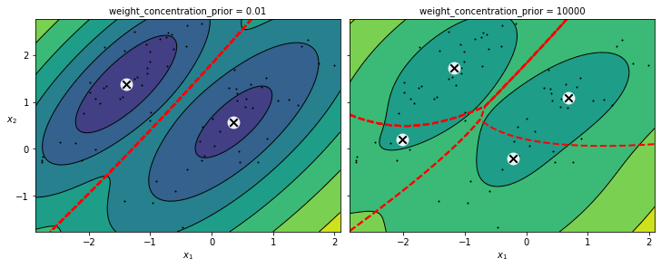
X_moons, y_moons = make_moons(n_samples=1000, noise=0.05, random_state=42)
bgm = BayesianGaussianMixture(n_components=10, n_init=10, random_state=42)
bgm.fit(X_moons)
BayesianGaussianMixture(n_components=10, n_init=10, random_state=42)In a Jupyter environment, please rerun this cell to show the HTML representation or trust the notebook.
On GitHub, the HTML representation is unable to render, please try loading this page with nbviewer.org.
BayesianGaussianMixture(n_components=10, n_init=10, random_state=42)
_, axes = plt.subplots(1, 2, figsize=(10, 4), constrained_layout=True)
plot_data(axes[0], X_moons)
axes[0].set_xlabel("$x_1$", fontsize='medium')
axes[0].set_ylabel("$x_2$", fontsize='medium', rotation=0)
plot_gaussian_mixture(axes[1], bgm, X_moons, show_ylabels=False)
plt.show()
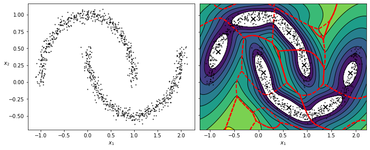
似然函数#
from scipy.stats import norm
xx = np.linspace(-6, 4, 101)
ss = np.linspace(1, 2, 101)
XX, SS = np.meshgrid(xx, ss)
ZZ = 2 * norm.pdf(XX - 1.0, 0, SS) + norm.pdf(XX + 4.0, 0, SS)
ZZ = ZZ / ZZ.sum(axis=1)[:, np.newaxis] / (xx[1] - xx[0])
from matplotlib.patches import Polygon
_, axes = plt.subplots(2, 2, figsize=(10, 6), constrained_layout=True)
x_idx = 85
s_idx = 30
axes[0, 0].contourf(XX, SS, ZZ, cmap="GnBu")
axes[0, 0].plot([-6, 4], [ss[s_idx], ss[s_idx]], "k-", linewidth=2)
axes[0, 0].plot([xx[x_idx], xx[x_idx]], [1, 2], "b-", linewidth=2)
axes[0, 0].set_xlabel(r"$x$")
axes[0, 0].set_ylabel(r"$\theta$", fontsize='medium', rotation=0)
axes[0, 0].set_title(r"Model $f(x; \theta)$", fontsize='medium')
axes[0, 1].plot(ss, ZZ[:, x_idx], "b-")
max_idx = np.argmax(ZZ[:, x_idx])
max_val = np.max(ZZ[:, x_idx])
axes[0, 1].plot(ss[max_idx], max_val, "r.")
axes[0, 1].plot([ss[max_idx], ss[max_idx]], [0, max_val], "r:")
axes[0, 1].plot([0, ss[max_idx]], [max_val, max_val], "r:")
axes[0, 1].text(1.01, max_val + 0.005, r"$\hat{L}$", fontsize='medium')
axes[0, 1].text(ss[max_idx] + 0.01,
0.055,
r"$\hat{\theta}$",
fontsize='medium')
axes[0, 1].text(ss[max_idx] + 0.01, max_val - 0.012, r"$Max$", fontsize=12)
axes[0, 1].axis([1, 2, 0.05, 0.15])
axes[0, 1].set_xlabel(r"$\theta$", fontsize='medium')
axes[0, 1].grid(True)
axes[0, 1].text(1.99,
0.135,
r"$=f(x=2.5; \theta)$",
fontsize='medium',
ha="right")
axes[0, 1].set_title(r"Likelihood function $\mathcal{L}(\theta|x=2.5)$",
fontsize='medium')
axes[1, 0].plot(xx, ZZ[s_idx], "k-")
axes[1, 0].axis([-6, 4, 0, 0.25])
axes[1, 0].set_xlabel(r"$x$", fontsize='medium')
axes[1, 0].grid(True)
axes[1, 0].set_title(r"PDF $f(x; \theta=1.3)$", fontsize='medium')
verts = [(xx[41], 0)] + list(zip(xx[41:81], ZZ[s_idx, 41:81])) + [(xx[80], 0)]
poly = Polygon(verts, facecolor='0.9', edgecolor='0.5')
axes[1, 0].add_patch(poly)
axes[1, 1].plot(ss, np.log(ZZ[:, x_idx]), "b-")
max_idx = np.argmax(np.log(ZZ[:, x_idx]))
max_val = np.max(np.log(ZZ[:, x_idx]))
axes[1, 1].plot(ss[max_idx], max_val, "r.")
axes[1, 1].plot([ss[max_idx], ss[max_idx]], [-5, max_val], "r:")
axes[1, 1].plot([0, ss[max_idx]], [max_val, max_val], "r:")
axes[1, 1].axis([1, 2, -2.4, -2])
axes[1, 1].set_xlabel(r"$\theta$", fontsize='medium')
axes[1, 1].text(ss[max_idx] + 0.01, max_val - 0.05, r"$Max$", fontsize=12)
axes[1, 1].text(ss[max_idx] + 0.01,
-2.39,
r"$\hat{\theta}$",
fontsize='medium')
axes[1, 1].text(1.01, max_val + 0.02, r"$\log \, \hat{L}$", fontsize='medium')
axes[1, 1].grid(True)
axes[1, 1].set_title(r"$\log \, \mathcal{L}(\theta|x=2.5)$", fontsize='medium')
plt.show()

习题#
面部识别#
from sklearn.datasets import fetch_olivetti_faces
olivetti = fetch_olivetti_faces()
print(olivetti.DESCR)
.. _olivetti_faces_dataset:
The Olivetti faces dataset
--------------------------
`This dataset contains a set of face images`_ taken between April 1992 and
April 1994 at AT&T Laboratories Cambridge. The
:func:`sklearn.datasets.fetch_olivetti_faces` function is the data
fetching / caching function that downloads the data
archive from AT&T.
.. _This dataset contains a set of face images: http://www.cl.cam.ac.uk/research/dtg/attarchive/facedatabase.html
As described on the original website:
There are ten different images of each of 40 distinct subjects. For some
subjects, the images were taken at different times, varying the lighting,
facial expressions (open / closed eyes, smiling / not smiling) and facial
details (glasses / no glasses). All the images were taken against a dark
homogeneous background with the subjects in an upright, frontal position
(with tolerance for some side movement).
**Data Set Characteristics:**
================= =====================
Classes 40
Samples total 400
Dimensionality 4096
Features real, between 0 and 1
================= =====================
The image is quantized to 256 grey levels and stored as unsigned 8-bit
integers; the loader will convert these to floating point values on the
interval [0, 1], which are easier to work with for many algorithms.
The "target" for this database is an integer from 0 to 39 indicating the
identity of the person pictured; however, with only 10 examples per class, this
relatively small dataset is more interesting from an unsupervised or
semi-supervised perspective.
The original dataset consisted of 92 x 112, while the version available here
consists of 64x64 images.
When using these images, please give credit to AT&T Laboratories Cambridge.
olivetti.target
array([ 0, 0, 0, 0, 0, 0, 0, 0, 0, 0, 1, 1, 1, 1, 1, 1, 1,
1, 1, 1, 2, 2, 2, 2, 2, 2, 2, 2, 2, 2, 3, 3, 3, 3,
3, 3, 3, 3, 3, 3, 4, 4, 4, 4, 4, 4, 4, 4, 4, 4, 5,
5, 5, 5, 5, 5, 5, 5, 5, 5, 6, 6, 6, 6, 6, 6, 6, 6,
6, 6, 7, 7, 7, 7, 7, 7, 7, 7, 7, 7, 8, 8, 8, 8, 8,
8, 8, 8, 8, 8, 9, 9, 9, 9, 9, 9, 9, 9, 9, 9, 10, 10,
10, 10, 10, 10, 10, 10, 10, 10, 11, 11, 11, 11, 11, 11, 11, 11, 11,
11, 12, 12, 12, 12, 12, 12, 12, 12, 12, 12, 13, 13, 13, 13, 13, 13,
13, 13, 13, 13, 14, 14, 14, 14, 14, 14, 14, 14, 14, 14, 15, 15, 15,
15, 15, 15, 15, 15, 15, 15, 16, 16, 16, 16, 16, 16, 16, 16, 16, 16,
17, 17, 17, 17, 17, 17, 17, 17, 17, 17, 18, 18, 18, 18, 18, 18, 18,
18, 18, 18, 19, 19, 19, 19, 19, 19, 19, 19, 19, 19, 20, 20, 20, 20,
20, 20, 20, 20, 20, 20, 21, 21, 21, 21, 21, 21, 21, 21, 21, 21, 22,
22, 22, 22, 22, 22, 22, 22, 22, 22, 23, 23, 23, 23, 23, 23, 23, 23,
23, 23, 24, 24, 24, 24, 24, 24, 24, 24, 24, 24, 25, 25, 25, 25, 25,
25, 25, 25, 25, 25, 26, 26, 26, 26, 26, 26, 26, 26, 26, 26, 27, 27,
27, 27, 27, 27, 27, 27, 27, 27, 28, 28, 28, 28, 28, 28, 28, 28, 28,
28, 29, 29, 29, 29, 29, 29, 29, 29, 29, 29, 30, 30, 30, 30, 30, 30,
30, 30, 30, 30, 31, 31, 31, 31, 31, 31, 31, 31, 31, 31, 32, 32, 32,
32, 32, 32, 32, 32, 32, 32, 33, 33, 33, 33, 33, 33, 33, 33, 33, 33,
34, 34, 34, 34, 34, 34, 34, 34, 34, 34, 35, 35, 35, 35, 35, 35, 35,
35, 35, 35, 36, 36, 36, 36, 36, 36, 36, 36, 36, 36, 37, 37, 37, 37,
37, 37, 37, 37, 37, 37, 38, 38, 38, 38, 38, 38, 38, 38, 38, 38, 39,
39, 39, 39, 39, 39, 39, 39, 39, 39])
from sklearn.model_selection import StratifiedShuffleSplit
strat_split = StratifiedShuffleSplit(n_splits=1, test_size=40, random_state=42)
train_valid_idx, test_idx = next(
strat_split.split(olivetti.data, olivetti.target))
X_train_valid = olivetti.data[train_valid_idx]
y_train_valid = olivetti.target[train_valid_idx]
X_test = olivetti.data[test_idx]
y_test = olivetti.target[test_idx]
strat_split = StratifiedShuffleSplit(n_splits=1, test_size=80, random_state=43)
train_idx, valid_idx = next(strat_split.split(X_train_valid, y_train_valid))
X_train = X_train_valid[train_idx]
y_train = y_train_valid[train_idx]
X_valid = X_train_valid[valid_idx]
y_valid = y_train_valid[valid_idx]
print(X_train.shape, y_train.shape)
print(X_valid.shape, y_valid.shape)
print(X_test.shape, y_test.shape)
(280, 4096) (280,)
(80, 4096) (80,)
(40, 4096) (40,)
To speed things up, we’ll reduce the data’s dimensionality using PCA:
from sklearn.decomposition import PCA
pca = PCA(0.99)
X_train_pca = pca.fit_transform(X_train)
X_valid_pca = pca.transform(X_valid)
X_test_pca = pca.transform(X_test)
pca.n_components_
199
from sklearn.cluster import KMeans
k_range = range(5, 120, 5)
kmeans_per_k = []
for k in k_range:
print("\rk={k}".format(k=k), end="")
kmeans = KMeans(n_clusters=k, random_state=42).fit(X_train_pca)
kmeans_per_k.append(kmeans)
k=115
from sklearn.metrics import silhouette_score
silhouette_scores = [
silhouette_score(X_train_pca, model.labels_) for model in kmeans_per_k
]
best_index = np.argmax(silhouette_scores)
best_k = k_range[best_index]
best_score = silhouette_scores[best_index]
_, ax = plt.subplots(figsize=(6, 4))
ax.plot(k_range, silhouette_scores, "bo-")
ax.set_xlabel("$k$", fontsize='medium')
ax.set_ylabel("Silhouette score", fontsize='medium')
ax.plot(best_k, best_score, "rs")
plt.show()
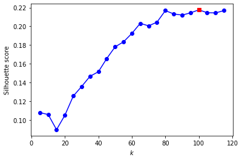
best_k
100
inertias = [model.inertia_ for model in kmeans_per_k]
best_inertia = inertias[best_index]
_, ax = plt.subplots(figsize=(6, 4))
ax.plot(k_range, inertias, "bo-")
ax.set_xlabel("$k$", fontsize='medium')
ax.set_ylabel("Inertia", fontsize='medium')
ax.plot(best_k, best_inertia, "rs")
plt.show()
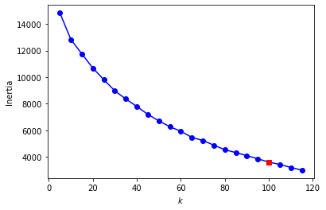
best_model = kmeans_per_k[best_index]
def plot_faces(faces, labels, n_cols=5):
faces = faces.reshape(-1, 64, 64)
_, axes = plt.subplots(1, len(faces), figsize=(len(faces)*1.5, len(faces)))
for ind, (face, label) in enumerate(zip(faces, labels)):
if len(faces) > 1:
ax = axes[ind]
else:
ax = axes
ax.imshow(face, cmap="gray")
ax.axis("off")
ax.set_title(label)
for cluster_id in np.unique(best_model.labels_):
print("Cluster", cluster_id)
in_cluster = best_model.labels_ == cluster_id
faces = X_train[in_cluster]
labels = y_train[in_cluster]
plot_faces(faces, labels)
plt.show()
Cluster 0
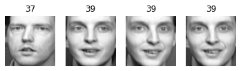
Cluster 1
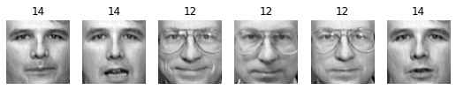
Cluster 2
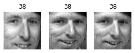
Cluster 3
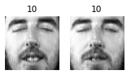
Cluster 4
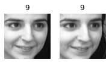
Cluster 5
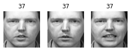
Cluster 6
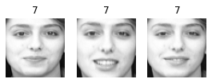
Cluster 7
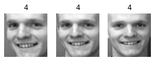
Cluster 8
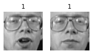
Cluster 9
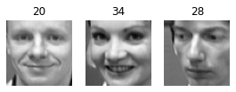
Cluster 10
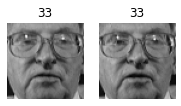
Cluster 11
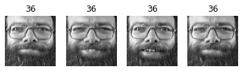
Cluster 12
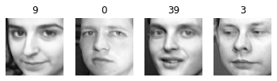
Cluster 13
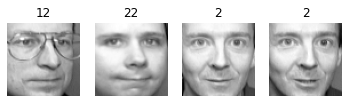
Cluster 14
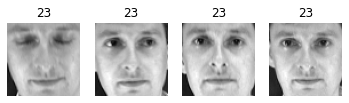
Cluster 15
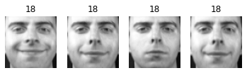
Cluster 16
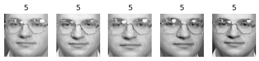
Cluster 17
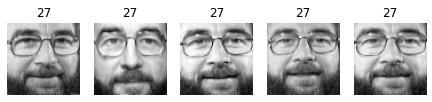
Cluster 18
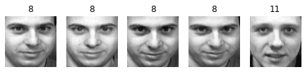
Cluster 19
Cluster 20
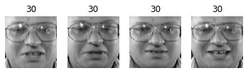
Cluster 21
Cluster 22
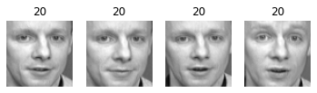
Cluster 23
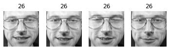
Cluster 24
Cluster 25
Cluster 26
Cluster 27
Cluster 28
Cluster 29
Cluster 30
Cluster 31
Cluster 32
Cluster 33
Cluster 34
Cluster 35
Cluster 36
Cluster 37
Cluster 38
Cluster 39
Cluster 40
Cluster 41
Cluster 42
Cluster 43
Cluster 44
Cluster 45
Cluster 46
Cluster 47
Cluster 48
Cluster 49
Cluster 50
Cluster 51
Cluster 52
Cluster 53
Cluster 54
Cluster 55
Cluster 56
Cluster 57
Cluster 58
Cluster 59
Cluster 60
Cluster 61
Cluster 62
Cluster 63
Cluster 64
Cluster 65
Cluster 66
Cluster 67
Cluster 68
Cluster 69
Cluster 70
Cluster 71
Cluster 72
Cluster 73
Cluster 74
Cluster 75
Cluster 76
Cluster 77
Cluster 78
Cluster 79
Cluster 80
Cluster 81
Cluster 82
Cluster 83
Cluster 84
Cluster 85
Cluster 86
Cluster 87
Cluster 88
Cluster 89
Cluster 90
Cluster 91
Cluster 92
Cluster 93
Cluster 94
Cluster 95
Cluster 96
Cluster 97
Cluster 98
Cluster 99
分类预处理#
from sklearn.ensemble import RandomForestClassifier
clf = RandomForestClassifier(n_estimators=150, random_state=42)
clf.fit(X_train_pca, y_train)
clf.score(X_valid_pca, y_valid)
0.9
X_train_reduced = best_model.transform(X_train_pca)
X_valid_reduced = best_model.transform(X_valid_pca)
X_test_reduced = best_model.transform(X_test_pca)
clf = RandomForestClassifier(n_estimators=150, random_state=42)
clf.fit(X_train_reduced, y_train)
clf.score(X_valid_reduced, y_valid)
0.775
from sklearn.pipeline import Pipeline
for n_clusters in k_range:
pipeline = Pipeline([
("kmeans", KMeans(n_clusters=n_clusters, random_state=42)),
("forest_clf", RandomForestClassifier(n_estimators=150,
random_state=42))
])
pipeline.fit(X_train_pca, y_train)
print(n_clusters, pipeline.score(X_valid_pca, y_valid))
5 0.3875
10 0.575
15 0.6
20 0.6625
25 0.6625
30 0.6625
35 0.675
40 0.75
45 0.7375
50 0.725
55 0.7125
60 0.7125
65 0.7375
70 0.7375
75 0.7375
80 0.7875
85 0.7625
90 0.75
95 0.7125
100 0.775
105 0.75
110 0.725
115 0.7625
X_train_extended = np.c_[X_train_pca, X_train_reduced]
X_valid_extended = np.c_[X_valid_pca, X_valid_reduced]
X_test_extended = np.c_[X_test_pca, X_test_reduced]
clf = RandomForestClassifier(n_estimators=150, random_state=42)
clf.fit(X_train_extended, y_train)
clf.score(X_valid_extended, y_valid)
0.85
高斯混合用于面部识别#
from sklearn.mixture import GaussianMixture
gm = GaussianMixture(n_components=40, random_state=42)
y_pred = gm.fit_predict(X_train_pca)
n_gen_faces = 20
gen_faces_reduced, y_gen_faces = gm.sample(n_samples=n_gen_faces)
gen_faces = pca.inverse_transform(gen_faces_reduced)
plot_faces(gen_faces, y_gen_faces)
n_rotated = 4
rotated = np.transpose(X_train[:n_rotated].reshape(-1, 64, 64), axes=[0, 2, 1])
rotated = rotated.reshape(-1, 64 * 64)
y_rotated = y_train[:n_rotated]
n_flipped = 3
flipped = X_train[:n_flipped].reshape(-1, 64, 64)[:, ::-1]
flipped = flipped.reshape(-1, 64 * 64)
y_flipped = y_train[:n_flipped]
n_darkened = 3
darkened = X_train[:n_darkened].copy()
darkened[:, 1:-1] *= 0.3
y_darkened = y_train[:n_darkened]
X_bad_faces = np.r_[rotated, flipped, darkened]
y_bad = np.concatenate([y_rotated, y_flipped, y_darkened])
plot_faces(X_bad_faces, y_bad)
X_bad_faces_pca = pca.transform(X_bad_faces)
gm.score_samples(X_bad_faces_pca)
array([-2.43643138e+07, -1.89785096e+07, -3.78112213e+07, -4.98187582e+07,
-3.20478788e+07, -1.37530601e+07, -2.92374176e+07, -1.05490033e+08,
-1.19576359e+08, -6.74260404e+07])
gm.score_samples(X_train_pca[:10])
array([1163.02021081, 1134.03637634, 1156.32132913, 1170.6760271 ,
1141.45404958, 1154.35205174, 1091.32894585, 1111.41149592,
1096.43048965, 1132.98982769])
异常值检测#
X_train_pca
array([[ 3.7808371e+00, -1.8548028e+00, -5.1440282e+00, ...,
-1.3563640e-01, -2.1408233e-01, 6.1187536e-02],
[ 1.0148824e+01, -1.5275403e+00, -7.6702237e-01, ...,
1.2392796e-01, -1.3526852e-01, -2.3269709e-02],
[-1.0015292e+01, 2.8772862e+00, -9.1988105e-01, ...,
7.2608739e-02, -2.9634673e-03, 1.2489063e-01],
...,
[ 2.4758682e+00, 2.9559741e+00, 1.2998559e+00, ...,
-2.0906268e-02, 3.4855794e-02, -1.5432902e-01],
[-3.2203135e+00, 5.3489809e+00, 1.3942654e+00, ...,
5.7540931e-02, -2.2831348e-01, 1.5557088e-01],
[-9.2287749e-01, -3.6470301e+00, 2.2608817e+00, ...,
1.3685165e-01, -6.9132820e-02, 6.2693857e-02]], dtype=float32)
def reconstruction_errors(pca, X):
X_pca = pca.transform(X)
X_reconstructed = pca.inverse_transform(X_pca)
mse = np.square(X_reconstructed - X).mean(axis=-1)
return mse
reconstruction_errors(pca, X_train).mean()
0.00019205349
reconstruction_errors(pca, X_bad_faces).mean()
0.0047073537
plot_faces(X_bad_faces, y_bad)

X_bad_faces_reconstructed = pca.inverse_transform(X_bad_faces_pca)
plot_faces(X_bad_faces_reconstructed, y_bad)